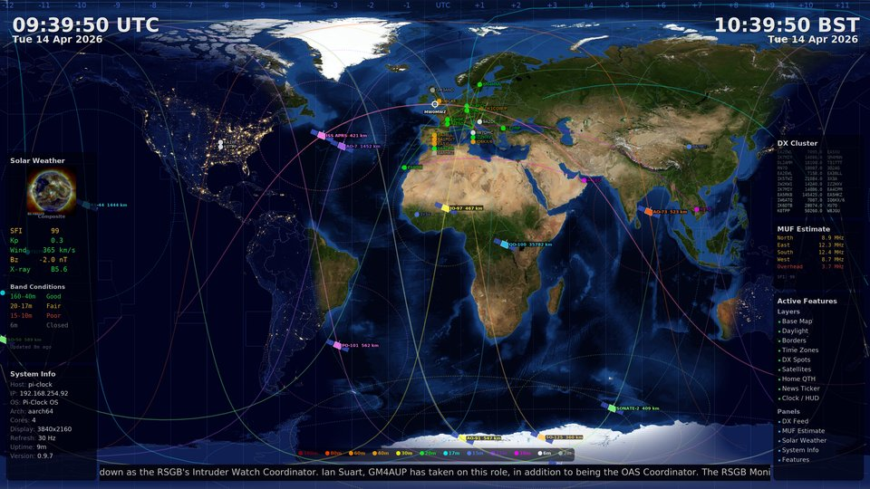

Pi-Clock
Open source ham radio world clock for Raspberry Pi

Pi-Clock running at 4K on a Raspberry Pi 5 — click for full resolution
Getting Started
Get Pi-Clock running on your Raspberry Pi in five steps. You'll need a Raspberry Pi (any model with HDMI), a micro SD card (4GB+), and an HDMI display.
Create your configuration
Use the Config Generator
to set up your WiFi, callsign, location, and display settings.
Click Detect My Location to auto-fill timezone and coordinates,
then download your pi-clock-config.txt file.
Download the OS image
Grab the latest Pi-Clock OS image using the
download button above,
or click here to download directly. No need to extract the .img.xz file first.
Write the image to your SD card
Windows & macOS: Use
Raspberry Pi Imager
— select "Use custom", choose the .img.xz file, and write to your SD card.
Skip the OS Customisation screen (Pi-Clock has its own config system).
Linux:
Replace /dev/sdX with your SD card device. Use lsblk to find it.
Add your config file
After writing the image, the SD card will have a boot partition visible on your PC.
Copy the pi-clock-config.txt you generated in step 1 onto this partition.
It will be processed automatically on first boot and then securely deleted.
Boot & configure
Insert the SD card into your Pi, connect HDMI and power. Pi-Clock will boot with the splash screen, connect to WiFi, and start displaying the world map.
Open a browser and go to
https://pi-clock.local (or whatever hostname you chose)
to access the dashboard. Log in with your password and enable the layers and features you want
— DX cluster, satellites, solar weather, news ticker, and more.
Features
Real-time World Map
NASA Blue Marble + Black Marble day/night blend with smooth greyline terminator. Beautiful at any resolution.
DX Cluster Integration
Live DX spots with great circle arcs, band-coloured markers, and a scrolling feed panel. Multi-cluster support.
Satellite Tracking
SGP4 orbit propagation for ISS, QO-100, and amateur satellites. Ground tracks, footprints, and live position.
Solar Weather
Live NOAA SWPC data: SFI, Kp index, solar wind, X-ray flux. SDO sun images. Band condition predictions and MUF estimates.
News Ticker
Scrolling headlines from ARRL, RSGB, DX World, Southgate ARC, and NOAA space weather alerts.
Web Dashboard
Configure everything from your browser. Layer controls, DX filters, satellite selection, WiFi, and system management.
Supported Hardware
Pi-Clock runs on every Raspberry Pi with HDMI output — from the original Model B through to the Pi 5.
| Model | Max Resolution | Notes |
|---|---|---|
| Pi 1 (A/B/A+/B+) | 1080p | HDMI hardware limited to 1080p. Single-core — reduced features* |
| Pi Zero / Zero W | 1080p | HDMI hardware limited to 1080p. Single-core — reduced features* |
| Pi Zero 2 W | 1080p | HDMI hardware limited to 1080p. Limited by 512MB RAM |
| Pi 2 | 1080p | HDMI hardware limited to 1080p |
| Pi 3 / 3A+ / 3B+ | 1080p | HDMI 1.4 limited to 1080p |
| Pi 4 | 4K | HDMI 2.0 — full 4K support |
| Pi 5 | 4K | HDMI 2.0 — full 4K support |
* Single-core limits (Pi Zero, Pi Zero W, Pi 1): Clock shows hours/minutes only (no seconds), news ticker uses Headlines mode only (no smooth scroll), resolution capped at 1080p, ticker FPS capped at 30. All other features — DX cluster, satellites, solar weather, overlays, and the web dashboard — work fully on every model.
Packages
armhf
· Deps: cairo sdl2 ttf-dejavu
armhf
· No runtime dependencies
noarch
· Includes: 720p, 1080p, 1440p, 4K maps